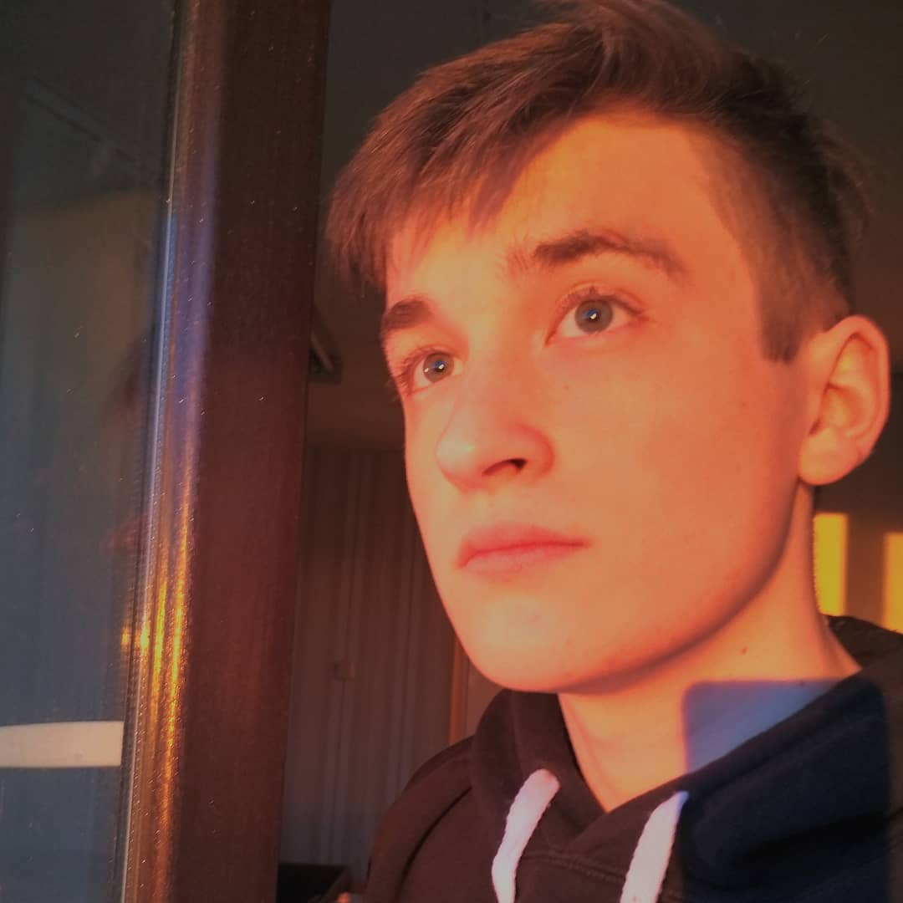

Personal information
1.Derenok Vladislav
2.My Telegram: DiFlex
3.My goal is to learn JS in a short time, I spend a lot of time on it.
I am diligent and patient, all this helps in learning new material.
No work experience, but I am ready to work with different projects to improve my skills.
Skills**
4.C ++, Python (did not finish training)
5.
python code:
import math
a = int(input())
b = int(input())
c = int(input())
p = (a + b + c) / 2
S = math.sqrt((p * (p - a) * (p - b) * (p - c)))
print(S)
6.No work experience
Education
7.Student of the Belarusian State University
8.A2